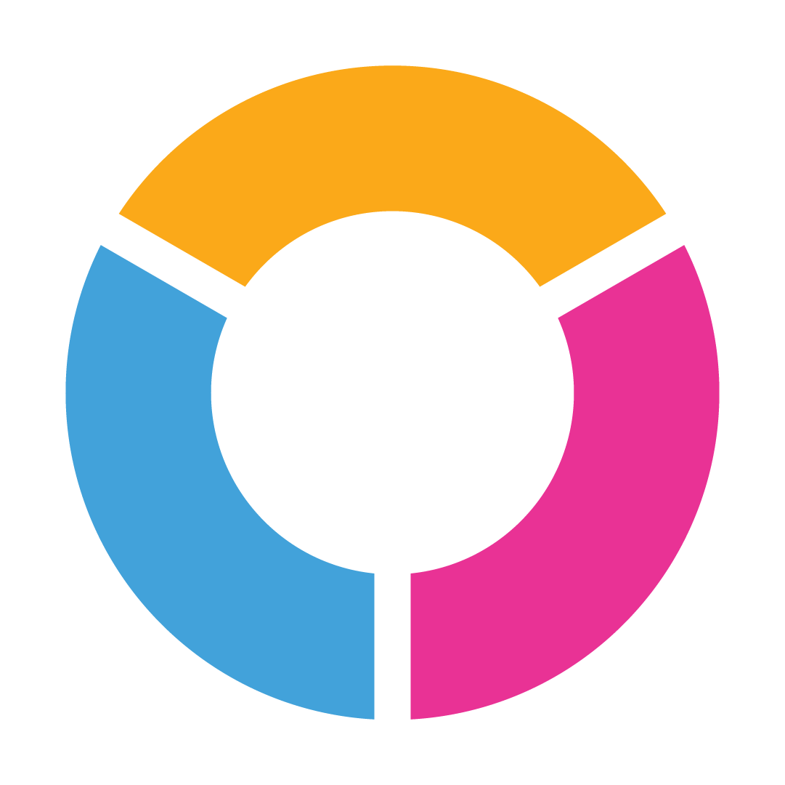
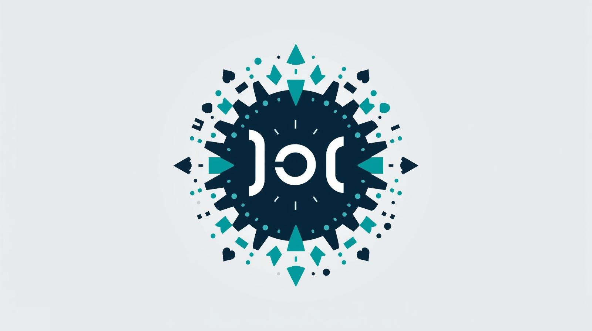

رؤية مختلفة
أستخدم تقنيات النمذجة السريعة والاختبارات لتقديم حلول تتغير مع احتياجات المستخدم.
جارٍ تحميل تجربة عبود...
طالب هندسة معلوماتية | صانع تجارب رقمية
أدرس هندسة المعلوماتية وأبني واجهات عاطفية تستند إلى البيانات. أساعد العلامات الناشئة ورواد الأعمال على تحويل أفكارهم إلى تجارب رقمية فيها حركة، ملمس، وقصة واضحة من أول تفاعل وحتى آخر نقرة.
سنوات عمل حر
تجربة ومحاكاة
علامة تعاونت معها


عنّي
أوازن بين دراسة هندسة المعلوماتية والممارسة العملية في تصميم التجارب. هذا التمازج يساعدني على قراءة البيانات، فهم سلوك المستخدمين، وتحويل الأفكار إلى منتجات لها هوية وإحساس حركي.
أستخدم تقنيات النمذجة السريعة والاختبارات لتقديم حلول تتغير مع احتياجات المستخدم.
أعمل مع فرق التسويق والتطوير لضمان اتساق التجربة من الإعلان إلى المنتج النهائي.
أعتمد على البيانات والتحليلات لمعرفة ما الذي يعمل وتكرار النجاح في المشاريع التالية.
أعمال مختارة

تصميم واجهات منصة تعليم تعزز تعلم البرمجة والتصميم عبر دروس تراكمية وتحديات تفاعلية.

بناء هوية متجر إلكتروني لتحسين ثقة المستخدم ومسار الشراء مع تجربة غنية بالحركة.

تطوير واجهة تطبيق تدريب لغات البرمجة مع لوحات تقدم فورية وأنظمة تحديات قابلة للتخصيص.
رحلتي
بحث نوعي لفهم الجمهور والرؤية.
نماذج تفاعلية مع تغذية راجعة سريعة.
مؤشرات أداء ولوحات تحليلات فورية.
السيرة الذاتية
نسخة مرتبة من بياناتي المهنية لتكون جاهزة للطباعة أو الحفظ بصيغة PDF عند الحاجة.
Motivated Informatics Engineering student with over 6 years of programming experience, starting from 2019. Skilled in multiple programming languages and passionate about software development, problem-solving, and building efficient digital solutions. Strong ability to learn new technologies and work on both web and software projects.
Syrian Virtual University (SVU)
Start Year: 2025تواصل